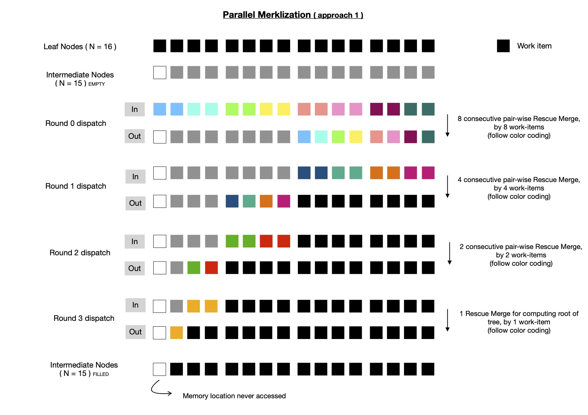

Around a fortnight back I wrote about OpenCL accelerated Merkle Tree construction technique, while using
Rescue Prime Hash as underlying collision resistant, cryptographic hash function for obtaining immediate parent node from two children
nodes ( either leaves/ intermediates ). You can find that post here.
During last two weeks, I've made some improvements in Rescue Prime Hash implementation and also ported it to SYCL. If you happen to
be specifically interested in those changes/ improvements, I suggest you take a look at following pull requests.
Along with that I also explored a different way of Merklization, where given problem statement is same as before i.e.
when N -many leaf nodes of some Binary Merkle Tree are provided with (N - 1) -many intermediate nodes to be computed.
In this new way of Merklization, I change which work-items are tasked to compute which intermediate nodes and how many
kernel dispatch rounds are required for computing all intermediate nodes. But, as usual, that itself comes with its benefits and drawbacks.
Today in this post, I plan to study design and performance of two Merklization techniques, that I've devised, while
using SYCL for implementation.
Same as last post, I'm not going to be explaining how I improved Rescue Prime implementation in SYCL, but I note that
a huge portion of Merklization performance boost comes from optimized implementation of Rescue Prime in SYCL.
I'll do a deep study of that in coming weeks, as promised before.
Let me begin with simple one, which henceforth I'll call merklization approach 1. Here merklize function is provided with N -many leaf nodes, where N = 2i ∀ i ∈ {1, 2, ...}. (N - 1) -many intermediate nodes are computed by dispatching compute kernel log2N times. Say for example, if I start with N = 32, all intermediates are computed in 5 rounds, as shown below.
You should also notice, there are 5 rounds and each of them are data dependent on previous dispatch round. But good news is that each of these rounds are easily parallelizable, due to absence of any intra-round data dependency. For some specific dispatch round if input to merklize has N intermediate/ leaf nodes, each pair of consecutive nodes are read by respective work-items ( N >> 1 in total ) which are merged into single Rescue Prime digest and stored in proper memory allocation. There is scope of global memory access coalescing, as non-strided, contiguous memory addresses are accessed by each work-item. Let us take help of a diagram to better appreciate the scope of parallelism.
In above diagram, N ( = 16 ) -many leaf nodes are used for depicting execution flow. It requires 4 kernel dispatch rounds to compute all intermediates and each of them are data dependent on previous round. Each dispatch round shows how many work-items are required to parallelly compute all computable intermediate nodes, by invoking Rescue merge function; which work-item accesses which pair of consequtive nodes ( either leaves/ intermediates; leaves applicable only during round 0 ). Note, very first memory location ( resevered for some Rescue Prime digest ) is never accessed by any of dispatched kernels, because (N - 1) -many intermediate nodes are stored in memory allocated for storing total of N -many intermediate nodes, where N is power of 2.
Implementing this in SYCL is pretty easy, using USM allocation allows me to perform pointer arithmetics, which is much more familiar compared to SYCL buffer/ sub-buffer/ accessor. I suggest you take a look here for exploring exact implementation details of approach 1.
Notice when N is relatively large, say = 224, total 24 kernel dispatch rounds will be required to compute all intermediate
nodes. Dispatching kernel requires host-device interaction, which is not cheap. Also OpenCL/ SYCL doesn't yet
allow recording commands into a buffer and then replaying same when required to be executed as I can do in Vulkan Compute; with that during actual kernel execution,
host-device interaction can be reduced and more work will be ready for offloading, while suffering less from host latencies due to say context switching.
Well, OpenCL has this extension
just to experiment with that idea, but today I'm working with SYCL. Motivated by this reason, I decided to devise a way
so that kernel dispatch round count can be reduced while Merklizing.
I'm going to refer to this new Merklization technique as approach 2. Say we've N = 224 -many leaf nodes and we're using work-group
size B = 28, then number of required kernel dispatch rounds for constructing Merkle Tree using approach 2 will be
log2(N >> (2 + log2B)) + 1, which turns out to be 15, much lesser than 24, which would be required using approach 1.
Also note, it doesn't matter what is work-group size, required #-of kernel dispatch rounds will always be log2N using approach 1.
But using approach 2, work-group size can influence total #-of required kernel dispatch rounds to compute whole Merkle Tree.
If I increase work-group size B to say 29, then following aforementioned formula, I'll be required to dispatch kernel 14 times.
But as per my experience, increasing work-group size to that large value benefits less, which we'll explore soon.
Say, finally I decide to live with work-group size B = 26, I'll be required to perform 17 rounds of kernel dispatch, which is still lesser than
24 rounds, required in approach 1.
I've come up with following formula for computing required #-of kernel dispatch rounds using approach 2.
You should notice, an appended + 1, in each of these cases, that's coming from here
--- the very first round of kernel dispatch reads all N -many leaves from input buffer and writes (N >> 1) -many intermediate nodes
( living just above leaf nodes ) in designated location of output buffer. After that remaining intermediate nodes are computed
in one/ many rounds. Note, each of these kernel dispatch rounds are data dependent on previous one, which is due to
inherent hierarchical structure of Merkle Tree.